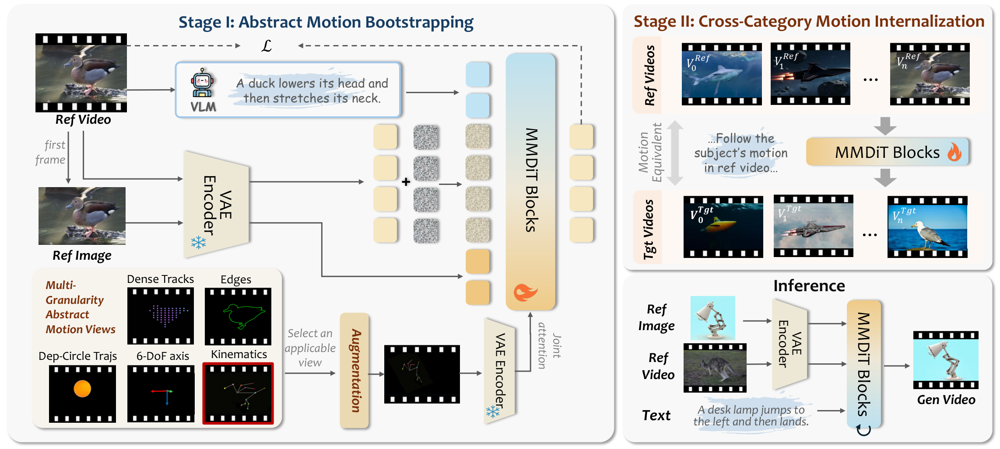
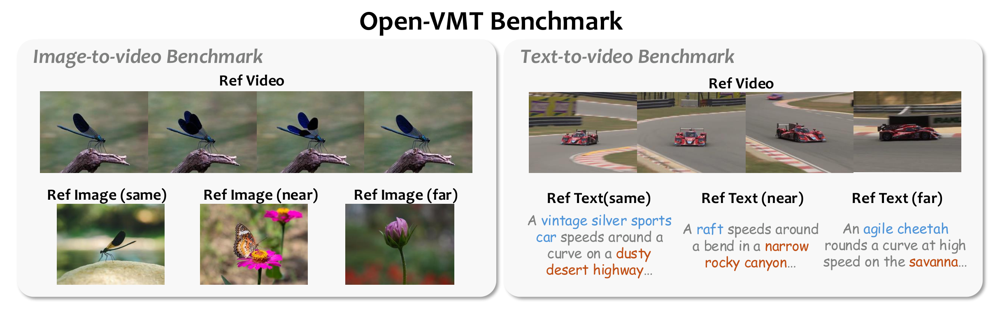

TL;DR: We enable open-category motion transfer beyond fixed structural correspondence through a two-stage framework that learns transferable motion abstractions and internalizes them into direct reference-video-conditioned generation, achieving state-of-the-art motion fidelity and target preservation across large morphological gaps.
Same-Category Transfer (Image-to-Video)
Same-category motion transfer preserves fine-grained dynamics within the same object category, where the source and target share similar morphological structures. Our method faithfully replicates motion details while maintaining target identity.
Near-Category Transfer (Image-to-Video)
Near-category transfer extends motion across semantically related but morphologically distinct categories. Our method adaptively preserves transferable motion attributes while avoiding source-specific structural leakage.
Far-Category Transfer (Image-to-Video)
Far-category transfer handles the most challenging scenario where source and target differ substantially in both appearance and morphology. Our method demonstrates robust motion fidelity and target preservation even under extreme category gaps.
More Text-to-Video Results
Text-to-video motion transfer results, where motion is transferred from a reference video to a target described by text prompts.
Method

Overview of our framework. Left: Stage I learns heterogeneous abstract motion conditions through a unified video-like interface and bootstraps filtered cross-category motion pairs. Upper right: Stage II internalizes this supervision by replacing abstract motion conditions with raw reference videos. Lower right: Inference directly conditions on a reference video, text, and an optional reference image, without explicit motion extraction or test-time optimization.
OpenVMT-Dataset & OpenVMT-Bench

Top: OpenVMT-Dataset is the first open-category training dataset with instance-level motion-equivalent cross-content pairs. Bottom: OpenVMT-Bench evaluates motion transfer under progressively increasing category gaps through Same, Near, and Far splits, supporting both T2V and I2V settings with metrics for motion fidelity, target preservation, and source leakage.
Acknowledgement
We thank the Kling team and all annotation contributors whose work made this project possible.
Responsible Use Statement
The images and videos presented in these demos are either sourced from public domains or generated by our models. They are intended solely for showcasing the capabilities of our research framework. If you have any concerns regarding the content, please feel free to contact us, and we will promptly remove the material if necessary.
BibTeX
@misc{fang2026motionmorphologybootstrappingcrosscategory,
title={Motion Beyond Morphology: Bootstrapping Cross-Category Motion Transfer from Abstract Motion Representations},
author={Zhixue Fang and Zhimin Zhang and Bi'an Du and Zijie Meng and Yan Zhou and Wei Hu and Guoxin Zhang and Pengfei Wan and Kun Gai},
year={2026},
eprint={2608.01628},
archivePrefix={arXiv},
primaryClass={cs.CV},
url={https://arxiv.org/abs/2608.01628},
}